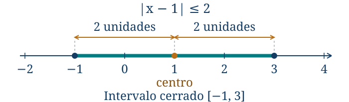
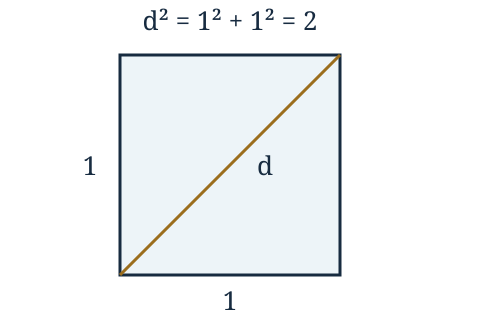

Los números, el orden y la recta real
← Capítulo cero. Antes de calcular: ¿qué significa resolver un problema? · Índice del libro · Siguiente →
Repartamos siete fichas por igual entre dos personas. Si queremos conservar las fichas enteras, podemos entregar tres a cada una y dejar una sobre la mesa; si las fichas representan una cantidad divisible, el reparto admite tres y media por persona. La cuenta se escribe del mismo modo, pero las condiciones del reparto determinan qué respuesta podemos aceptar. Para expresar ambas situaciones necesitamos precisar qué números estamos usando.
La dificultad reaparece al restar siete de tres: una colección de tres objetos no permite retirar siete, mientras que un saldo o una temperatura sí pueden tomar valores negativos. Las operaciones nos van llevando a conjuntos de números más amplios. Más adelante, la diagonal de un cuadrado de lado uno exigirá una longitud que ninguna fracción de enteros expresa exactamente; la raíz cuadrada de dos tendrá entonces un lugar junto a los números con los que ya sabemos contar y repartir.
Podemos reunir esas cantidades sobre una recta y compararlas por sus posiciones. Allí las escrituras distintas de una misma cantidad deberán ocupar el mismo punto: dos cuartos y una mitad coinciden porque dividir cada mitad en dos partes produce cuartos. Estudiaremos cómo reconocer esas coincidencias, cómo se relaciona el orden con las operaciones y qué información conserva una representación decimal. El dominio que en el capítulo cero acompañaba a una ecuación comienza así a adquirir una estructura propia.
Contar, restar y repartir
Para contar usaremos la convención \(\mathbb N=\{0,1,2,3,\ldots\}\) y escribiremos \(\mathbb N_{>0}\) para los naturales positivos. Otros libros empiezan los naturales en uno; declarar la convención permite saber qué conjunto acompaña a cada afirmación. La suma y el producto de naturales permanecen en ese conjunto, mientras que una resta como \(3-7\) exige ampliarlo. Los enteros
\[\mathbb Z=\{\ldots,-3,-2,-1,0,1,2,3,\ldots\}\]
permiten efectuar siempre la resta. El negativo \(-a\) es el número que sumado a \(a\) produce cero. Por eso restar \(b\) significa sumar su opuesto: \(a-b=a+(-b)\). El signo menos tiene aquí dos usos relacionados: en \(-b\) nombra un opuesto; en \(a-b\) indica una operación.
Dividir nos obliga a ampliar otra vez. Un racional es un número representable como \(p/q\), con \(p,q\in\mathbb Z\) y \(q\ne0\). El conjunto de todos ellos se escribe \(\mathbb Q\). Dos representaciones \(p/q\) y \(r/s\) nombran el mismo racional precisamente cuando \(ps=rq\). La igualdad \(1/2=2/4\) expresa esta independencia del representante. Una fracción describe el número mediante una elección de partes: al dividir cada mitad en dos partes iguales, media unidad pasa a ocupar dos cuartos y conserva su tamaño. La regla de los productos cruzados permite comprobar la igualdad para cualesquiera signos: multiplicamos por el producto de los denominadores y podemos deshacer ese paso porque ambos son distintos de cero. Al multiplicar numerador y denominador por el mismo entero no nulo conservamos el número.
La condición \(q\ne0\) tiene una razón: dividir \(p\) por \(q\) debe producir el único número \(x\) tal que \(qx=p\). Si \(q=0\) y \(p\ne0\), no existe tal \(x\); si ambos son cero, cualquier \(x\) sirve y se pierde la unicidad. Ninguno de los dos casos define una división. En cambio \(0/q=0\) cuando \(q\ne0\).
Los racionales se suman y multiplican por
\[\frac pq+\frac rs=\frac{ps+rq}{qs},\qquad \frac pq\frac rs=\frac{pr}{qs},\quad q,s\ne0.\]
Para sumar, necesitamos contar partes del mismo tamaño: por eso expresamos ambas fracciones con denominador \(qs\). Al multiplicar, tomar \(p/q\) de una cantidad y después \(r/s\) de ella equivale a tomar \(pr/(qs)\) de la cantidad inicial. Para dividir por \(r/s\) multiplicamos por \(s/r\), lo que exige también \(r\ne0\). El capítulo siguiente desarrollará el significado de estas operaciones, las razones y los porcentajes; aquí necesitamos comprender cómo encajan en los sistemas numéricos.
Cada natural se identifica con un entero, y cada entero \(n\) con el racional \(n/1\). Escribimos \(\mathbb N\subsetneq\mathbb Z\subsetneq\mathbb Q\): el símbolo indica inclusiones propias, pues \(-1\) es entero y no natural, y \(1/2\) es racional y no entero. Cada natural pertenece también a los racionales. Cuando se pide clasificar un número, conviene aclarar si se solicita el menor de estos conjuntos que lo contiene o todas sus pertenencias.
Problema 1. Clasificar sin excluir
Enunciado. Clasifica \(0\), \(-7\), \(6/3\) y \(-5/2\) entre naturales, enteros y racionales.
Solución. Con nuestra convención, \(0\) pertenece a los tres conjuntos. El número \(-7\) es entero y racional, pues \(-7=-7/1\), pero no natural. Antes de clasificar \(6/3\) calculamos su valor: es \(2\), de modo que pertenece a los tres. Finalmente \(-5/2\) es racional; no es entero porque ningún entero multiplicado por dos da \(-5\). Por ello tampoco es natural. La forma de la escritura no decide por sí sola el conjunto más pequeño al que pertenece su valor.
Problema 2. Lo que significa cerrar una operación
Enunciado. ¿Puede efectuarse siempre la resta en \(\mathbb N\)? ¿Y la división en \(\mathbb Z\)? Explica qué ampliación resuelve cada dificultad.
Solución. Para que una operación esté cerrada en un conjunto, el resultado debe permanecer en él para cualesquiera entradas admitidas. La resta \(2-5=-3\) muestra que \(\mathbb N\) no es cerrado para la resta; \(\mathbb Z\) sí lo es. La división \(1/2\) muestra que los enteros no son cerrados para dividir incluso por un divisor no nulo. En \(\mathbb Q\) toda división por un racional distinto de cero vuelve a ser racional. La ampliación conserva las operaciones anteriores y permite resultados antes ausentes; no convierte en legítima la división por cero.
Problema 3. Un signo menos delante de otro
Enunciado. Un saldo inicial de \(-8\) unidades aumenta en \(5\) y después se elimina una deuda de \(4\) unidades. Modela el nuevo saldo.
Solución. El primer aumento produce \(-8+5=-3\). Una deuda de cuatro se representa por \(-4\); eliminarla significa restar \(-4\). Así el nuevo saldo es \(-3-(-4)=-3+4=1\). La identidad \(-(-4)=4\) se debe a que el opuesto del opuesto devuelve el número inicial: \(-4+4=0\). La respuesta es un saldo favorable de una unidad. Sumar \(-4\) habría representado contraer otra deuda, una situación diferente.
Operaciones con representaciones racionales
En las filas de fracciones, los numeradores y denominadores son enteros y todos los denominadores escritos deben ser no nulos. La división por cero sigue excluida al ampliar el sistema numérico.
| Propiedad | Fórmula y condiciones de uso |
|---|---|
| Restar y tomar opuestos | \(a-b=a+(-b)\) y \(-(-b)=b\). |
| Igualdad de fracciones | \(p/q=r/s\Longleftrightarrow ps=rq\), con \(q,s\ne0\). |
| Cambiar representante | \(p/q=(kp)/(kq)\), con \(q,k\ne0\). |
| Suma | \(p/q+r/s=(ps+rq)/(qs)\), con \(q,s\ne0\). |
| Producto | \((p/q)(r/s)=pr/(qs)\), con \(q,s\ne0\). |
| Cociente | \((p/q):(r/s)=ps/(qr)\), con \(q,r,s\ne0\). |
| Numerador nulo | \(0/q=0\), con \(q\ne0\). |
Pruebas. Apéndice: «Opuestos, inversos y productos nulos», «Fracciones: representantes y operaciones».
Un orden compatible con las operaciones
Para situar números elegimos un punto llamado origen, una dirección positiva y una unidad. El punto \(2\) queda a dos unidades a la derecha del origen; \(-2\) queda a dos a la izquierda. Diremos que \(a<b\) cuando \(b-a\) es positivo. Esta definición coincide con que \(a\) esté a la izquierda de \(b\). En particular, \(-5<-2\) porque \((-2)-(-5)=3>0\). Un número negativo de mayor valor absoluto está más a la izquierda.
El orden tiene una propiedad decisiva: sumar la misma cantidad a dos números conserva su comparación, pues \((b+c)-(a+c)=b-a\). También multiplicar por \(c>0\) conserva el orden: si \(b-a>0\), entonces \(c(b-a)>0\). Multiplicar por \(c<0\) lo invierte, ya que el producto de un negativo y un positivo es negativo. Si \(c=0\), ambos productos son iguales y se pierde la desigualdad estricta.
Las reglas de signos pueden justificarse con las leyes de las operaciones. De \(b+(-b)=0\), la distributividad da \(ab+a(-b)=0\) y por tanto \(a(-b)=-(ab)\). Aplicándola otra vez obtenemos \((-a)(-b)=ab\). Exigimos que la extensión de los números mantenga la distributividad; estas reglas son consecuencias de esa exigencia.
Cuando se combinan operaciones, los paréntesis expresan la agrupación. En su ausencia, potencias y raíces se calculan antes que productos y cocientes, y estos antes que sumas y restas. Las sumas y restas encadenadas se efectúan de izquierda a derecha; lo mismo vale para productos y cocientes de igual prioridad. En potencias encadenadas, los paréntesis o la disposición de los exponentes precisan la agrupación. Así \(12:3\cdot2=8\), mientras que \(12:(3\cdot2)=2\). La raya de fracción agrupa todo el numerador y todo el denominador. El exponente afecta a su base: \(-3^2=-(3^2)=-9\), mientras que \((-3)^2=9\).
Problema 4. Comparar negativos racionales
Enunciado. Ordena \(-3/4\), \(-2/3\) y \(-5/6\) sin decimales.
Solución. Un denominador positivo común es \(12\). Los números son \(-9/12\), \(-8/12\) y \(-10/12\). Cada fracción cuenta unidades del mismo tamaño, por lo que basta ordenar los numeradores: \(-10<-9<-8\). Concluimos \(-5/6<-3/4<-2/3\). El de mayor magnitud negativa queda primero. La reducción a denominador común es reversible porque multiplicamos numerador y denominador por factores positivos no nulos.
Problema 5. Una fracción agrupa
Enunciado. Calcula \(\dfrac{3-2(1-4)}{5-2}\) y explica la prioridad de cada paso.
Solución. El denominador es \(3\ne0\), de modo que la expresión está definida. En el numerador comenzamos por el paréntesis: \(1-4=-3\). El producto es \(2(-3)=-6\), y restarlo da \(3-(-6)=9\). Finalmente \(9/3=3\). La raya de fracción obliga a completar ambos bloques antes de dividir. Si hubiéramos dividido solo el último término del numerador, habríamos cambiado la expresión.
Problema 6. Racionales y operaciones sucesivas
Enunciado. Calcula \(\dfrac12-\dfrac34:\dfrac32\).
Solución. El divisor \(3/2\) no es cero. Primero efectuamos la división, multiplicando por su inverso: \((3/4)(2/3)=6/12=1/2\). Después restamos: \(1/2-1/2=0\). Si se quisiera dividir toda la diferencia, habría que escribir \((1/2-3/4):(3/2)\), cuyo valor sería \((-1/4)(2/3)=-1/6\). Los paréntesis cambian qué operación se aplica a qué números.
Problema 7. Por qué se invierte el orden
Enunciado. Partiendo de \(-2<3\), compara los resultados al multiplicar por \(4\), por \(-4\) y por \(0\).
Solución. Multiplicar por \(4>0\) da \(-8<12\). Multiplicar por \(-4<0\) da \(8>-12\): la diferencia que era positiva cambia a negativa. Con \(0\) obtenemos \(0=0\) y ya no una desigualdad estricta. Estos tres casos explican por qué no podemos multiplicar una desigualdad por un factor de signo desconocido y conservar automáticamente el mismo símbolo.
Problema 8. Comparar recíprocos con hipótesis
Enunciado. Prueba que si \(0<a<b\), entonces \(1/b<1/a\). Examina qué ocurre con \(a=-1\), \(b=2\).
Solución. Bajo la hipótesis positiva, \(ab>0\) y
\[\frac1a-\frac1b=\frac{b-a}{ab}>0.\]
Esta positividad equivale a \(1/b<1/a\). Si \(a=-1\) y \(b=2\), sigue cumpliéndose \(a<b\), pero \(1/b=1/2\) es mayor que \(1/a=-1\). El cálculo localiza la hipótesis decisiva: necesitamos que el producto \(ab\) sea positivo para el argumento dado. En particular, no alcanza con exigir que ambos números sean no nulos.
Reglas de signos y de orden
Las letras representan reales. Las reglas de comparación se escriben con desigualdad estricta; también valen con desigualdades no estrictas cuando el factor conserva el signo exigido.
| Propiedad | Fórmula y condiciones de uso |
|---|---|
| Un factor negativo | \(a(-b)=-(ab)\) y \((-a)b=-(ab)\). |
| Dos factores negativos | \((-a)(-b)=ab\). |
| Sumar la misma cantidad | \(a<b\Longleftrightarrow a+c<b+c\). |
| Factor positivo | \(a<b\Longleftrightarrow ac<bc\), con \(c>0\). Dividir por \(c>0\) también conserva el orden. |
| Factor negativo | \(a<b\Longleftrightarrow ac>bc\), con \(c<0\). Dividir por \(c<0\) también invierte el orden. |
| Factor cero | \(a\cdot0=b\cdot0=0\). La desigualdad estricta se pierde. |
| Recíprocos positivos | \(0<a<b\Longrightarrow 1/b<1/a\). Ser distintos de cero, sin controlar el signo, no basta. |
Pruebas. Apéndice: «Opuestos, inversos y productos nulos», «Signos y compatibilidad del orden».
Distancias e intervalos
El valor absoluto de un real es su distancia al origen:
\[|x|=\begin{cases}x,&x\ge0,\\-x,&x<0.\end{cases}\]
En el segundo caso tomamos el opuesto de un número negativo y obtenemos uno positivo: si \(x=-5\), entonces \(-x=5\). Por definición \(|x|\ge0\), y solo vale cero cuando \(x=0\). La distancia entre \(a\) y \(b\) es \(|a-b|=|b-a|\). Cambiar el sentido de un recorrido cambia el signo del desplazamiento, pero conserva su longitud.
Si \(r>0\), estar a distancia menor que \(r\) de \(a\) significa quedar entre \(a-r\) y \(a+r\):
\[|x-a|<r\quad\Longleftrightarrow\quad a-r<x<a+r.\]
Para comprobarlo, ponemos \(u=x-a\). Si \(u\ge0\), \(|u|<r\) significa \(u<r\) y ya sabemos que \(u>-r\). Si \(u<0\), significa \(-u<r\), es decir \(u>-r\), y ya sabemos que \(u<r\). Los mismos casos permiten invertir el argumento. Reemplazar los símbolos estrictos por \(\le\) incluye los extremos.
Un intervalo reúne todos los reales entre sus extremos. Escribimos \((a,b)\) si excluimos ambos, \([a,b]\) si incluimos ambos, y \([a,b)\) o \((a,b]\) si incluimos solo uno. También usamos \((a,\infty)\) y \((-\infty,b]\) para conjuntos sin cota en una dirección. Los signos de infinito no son números reales ni extremos que podamos incluir. La intersección \(A\cap B\) pide cumplir ambas condiciones; la unión \(A\cup B\) pide cumplir al menos una.
Problema 9. Distancia y desplazamiento
Enunciado. Un punto pasa de \(-7/2\) a \(1/2\) en una recta con unidad de un metro. Halla su desplazamiento y la distancia entre las posiciones.
Solución. Restamos posición final menos inicial: \(1/2-(-7/2)=8/2=4\). El desplazamiento es \(+4\) metros y la distancia es \(|4|=4\) metros. En el recorrido inverso el desplazamiento sería \(-4\) metros y la distancia seguiría siendo cuatro. Con estos datos conocemos la separación de las posiciones; si hubo idas y vueltas, la longitud total recorrida podría ser mayor.
Problema 10. Dentro de una distancia
Enunciado. Describe los reales que satisfacen \(|x-1|\le2\) y representa el conjunto mediante un intervalo.
Solución. La condición pide distancia a \(1\) a lo sumo dos. Se traduce en \(-2\le x-1\le2\). Sumando uno en los tres miembros obtenemos \(-1\le x\le3\), es decir \([-1,3]\). Los extremos verifican la igualdad \(|x-1|=2\) y pertenecen al conjunto; todos los puntos interiores tienen distancia menor. En el dibujo, el centro está marcado en \(1\) y las dos flechas miden dos unidades, una hacia cada lado. Los puntos rellenos indican que \(-1\) y \(3\) están incluidos. El segmento reúne todas las posiciones que cumplen la desigualdad.

Problema 11. Fuera de una distancia
Enunciado. Describe \(|x+2|>3\) para \(x\in\mathbb R\).
Solución. El centro es \(-2\), pues \(x+2=x-(-2)\). Estar a distancia mayor que tres significa quedar a la izquierda de \(-5\) o a la derecha de \(1\). Por tanto el conjunto es \((-\infty,-5)\cup(1,\infty)\). Comprobamos un punto de cada rama: \(|-6+2|=4>3\) y \(|2+2|=4>3\). Los extremos dan tres y se excluyen. El punto central da cero, por lo que la respuesta no puede ser el intervalo entre los extremos.
Problema 12. Dos restricciones simultáneas
Enunciado. Se exige \(x\in[-2,4)\) y también \(x>1\). ¿Qué valores quedan? ¿Cuál sería el resultado si bastara una de las dos condiciones?
Solución. Cumplir ambas es tomar \([-2,4)\cap(1,\infty)=(1,4)\). El uno queda fuera porque la segunda condición es estricta; el cuatro queda fuera por la primera. Si bastara una, tomaríamos la unión: \([-2,4)\cup(1,\infty)=[-2,\infty)\). Entre uno y cuatro los conjuntos se superponen, así que no dejan huecos. La palabra «y» o «o» cambia el conjunto buscado.
Problema 13. Una desigualdad elemental
Enunciado. Resuelve \(3-2x\le7\) en los reales y escribe la respuesta en intervalos.
Solución. Restamos tres, operación reversible: \(-2x\le4\). Al dividir por \(-2\) invertimos el orden y resulta \(x\ge-2\). Así \(S=[-2,\infty)\). En el extremo, \(3-2(-2)=7\); para \(x=0\) se obtiene \(3\le7\); para \(x=-3\) se obtiene \(9\le7\), falso. Estas comprobaciones detectan un eventual error de signo, mientras que la equivalencia de los pasos demuestra la respuesta completa. El estudio sistemático de inecuaciones aparecerá en el capítulo dedicado a ecuaciones, inecuaciones y valor absoluto.
Distancias y conjuntos solución
En las condiciones con centro y radio se supone \(r>0\). Las barras se aplican al valor de toda la expresión que contienen.
| Propiedad | Fórmula y condiciones de uso |
|---|---|
| Valor absoluto | \(\lvert x\rvert=x\) si \(x\ge0\) y \(\lvert x\rvert=-x\) si \(x<0\). |
| No negatividad | \(\lvert x\rvert\ge0\) y \(\lvert x\rvert=0\Longleftrightarrow x=0\). |
| Simetría de la distancia | \(\lvert a-b\rvert=\lvert b-a\rvert\). |
| Interior | \(\lvert x-a\rvert<r\Longleftrightarrow a-r<x<a+r\). Con \(\le\) se incluyen ambos extremos. |
| Exterior | \(\lvert x-a\rvert>r\Longleftrightarrow x<a-r\text{ o }x>a+r\). Con \(\ge\) se incluyen ambos extremos. |
| Condiciones simultáneas o alternativas | Cumplir \(A\) y \(B\) corresponde a \(A\cap B\); cumplir al menos una corresponde a \(A\cup B\). |
Pruebas. Apéndice: «Valor absoluto, distancia e intervalos».
Entre dos números
Entre los enteros \(2\) y \(3\) no hay otro entero. Entre los racionales \(2\) y \(3\) sí hay un racional: \(5/2\). Y entre \(2\) y \(5/2\) hay otro: \(9/4\). ¿Termina alguna vez esta posibilidad?
Si \(a<b\) son racionales, su promedio \(m=(a+b)/2\) es racional y cumple \(a<m<b\). En efecto, \(m-a=(b-a)/2>0\) y \(b-m=(b-a)/2>0\). Por tanto ningún racional tiene un racional inmediatamente siguiente: cualquier candidato \(b>a\) deja espacio para su promedio con \(a\).
Decimos que \(\mathbb Q\) es denso en \(\mathbb R\) si entre cualesquiera reales distintos hay un racional. La prueba del promedio solo resuelve el caso en que ambos extremos son racionales; si uno es irracional, el promedio podría serlo también. Para el caso general utilizaremos una propiedad de los reales, la propiedad arquimediana: dado un real \(M\), existe un natural mayor que \(M\). Equivale a poder elegir unidades \(1/n\) tan pequeñas como se necesite.
Sean ahora \(a<b\) reales. Elegimos \(n\in\mathbb N_{>0}\) tal que \(n>1/(b-a)\), de modo que \(n(b-a)>1\). Buscamos un entero \(k\) con \(na<k\le na+1\), porque la separación entre los extremos escalados supera una unidad. Para construirlo, elegimos un natural \(m\) tal que \(na+m\ge0\), usando la propiedad arquimediana. Entre los naturales mayores que \(na+m\) existe un menor elemento \(j\): el conjunto es no vacío por la misma propiedad arquimediana. Como \(j\ge1\), su predecesor es natural, y la minimalidad de \(j\) da \(j-1\le na+m<j\). Al restar \(m\) y poner \(k=j-m\) obtenemos precisamente \(na<k\le na+1\). La traslación permite usar el menor natural aun cuando el punto inicial \(na\) sea negativo. Entonces
\[na<k\le na+1<nb,\]
y al dividir por \(n>0\) obtenemos \(a<k/n<b\). Hemos construido un racional dentro del intervalo a partir de su anchura: elegimos una escala en la que esa anchura supera la unidad y localizamos después un entero entre los extremos escalados. La propiedad arquimediana permite escoger la escala y el principio del menor natural permite localizar el entero; el argumento funciona también cuando los extremos dados son irracionales.
Problema 14. Fabricar números intermedios
Enunciado. Encuentra tres racionales distintos entre \(2/5\) y \(3/5\) y explica por qué hay infinitos.
Solución. El promedio es \(1/2\). Promediando \(2/5\) con \(1/2\) obtenemos \(9/20\); promediando \(1/2\) con \(3/5\) obtenemos \(11/20\). Así \(2/5<9/20<1/2<11/20<3/5\). Para demostrar infinitud repetimos el promedio entre el extremo izquierdo y el último punto elegido. En cada paso sale un racional estrictamente entre ambos, diferente de todos los anteriores porque queda más cerca del extremo izquierdo. No existe una última fracción disponible.
Problema 15. Un racional entre extremos irracionales
Enunciado. Encuentra un racional entre \(\sqrt2\) y \(\sqrt3\) sin usar aproximaciones de calculadora.
Solución. Probemos \(3/2\). Como los tres números son positivos, podemos comparar cuadrados: \(2<9/4<3\), pues \(8<9<12\) al multiplicar por cuatro. Para positivos el cuadrado conserva estrictamente el orden, de modo que \(\sqrt2<3/2<\sqrt3\). El promedio de los extremos no era necesario; una fracción candidata y dos comparaciones exactas resolvieron el problema.
Problema 16. No hay siguiente racional
Enunciado. Una persona propone que \(0{,}5001\) es el racional inmediatamente posterior a \(1/2\). Refuta la propuesta y prueba que ninguna otra puede funcionar.
Solución. El racional \(0{,}50005\) está estrictamente entre \(0{,}5\) y \(0{,}5001\), así que la propuesta falla. En general, si se propone cualquier racional \(r>1/2\), el promedio \(m=(r+1/2)/2\) cumple \(1/2<m<r\). Por tanto siempre encontramos un racional antes del candidato, y no existe sucesor racional. El primer decimal refuta la propuesta particular; el promedio demuestra la imposibilidad general.
Una longitud que las fracciones no alcanzan

La densidad podría sugerir que las fracciones bastan para medir todas las longitudes. Un cuadrado de lado uno muestra la dificultad. Por el teorema de Pitágoras, su diagonal \(d>0\) satisface \(d^2=1^2+1^2=2\). La geometría motiva el problema; la demostración siguiente solo necesita aritmética de enteros.
Supongamos que \(d=p/q\) con \(p,q\) enteros positivos sin factores comunes y \(q>0\). Al elevar al cuadrado y multiplicar por \(q^2\ne0\) obtenemos \(p^2=2q^2\). Así \(p^2\) es par. Si \(p\) fuera impar, \(p=2k+1\) y \(p^2=2(2k^2+2k)+1\) sería impar. Por tanto \(p\) es par y podemos escribir \(p=2r\). Sustituimos: \(4r^2=2q^2\), de donde \(q^2=2r^2\). El mismo argumento obliga a que \(q\) sea par. Esto contradice que \(p/q\) estuviera reducida, porque ambos tendrían el factor dos. Concluimos que ningún racional tiene cuadrado dos.
Los reales incluyen los racionales y los irracionales. Un irracional es un real cuya distancia a cada número racional es estrictamente positiva; \(\sqrt2\) es un ejemplo. La propiedad del valor absoluto permite reconocer esta condición: la distancia entre dos reales vale cero exactamente cuando ambos coinciden. Cada racional se compara por separado con el número dado; la densidad permite obtener distancias positivas tan pequeñas como se desee. Escribimos \(\mathbb N\subsetneq\mathbb Z\subsetneq\mathbb Q\subsetneq\mathbb R\). Esta notación organiza lo conocido, pero no construye por sí sola \(\mathbb R\). Adoptamos el sistema real con sus operaciones y su orden, y explicitaremos una propiedad adicional que distingue su continuidad de la densidad de las fracciones.
Problema 17. Una contradicción que exige fracción reducida
Enunciado. ¿Por qué la prueba de irracionalidad de \(\sqrt2\) empieza con una fracción reducida? ¿Bastaría descubrir que numerador y denominador son pares?
Solución. Una fracción arbitraria puede tener ambos términos pares: \(2/4\) representa sin dificultad un racional. Por eso la paridad de ambos términos no sería una contradicción por sí sola. Todo racional positivo admite una representación reducida al dividir numerador y denominador por su máximo común divisor. La hipótesis de racionalidad nos permite elegir esa representación desde el comienzo. Deducir después que ambos términos son pares contradice exactamente esa elección, y así queda descartada la hipótesis. Es esencial identificar qué dos afirmaciones resultan incompatibles.
Problema 18. Una traslación conserva la irracionalidad
Enunciado. Prueba que \(1+\sqrt2\) es irracional.
Solución. Si \(1+\sqrt2=r\) fuera racional, restar el racional uno daría \(\sqrt2=r-1\). La diferencia de racionales es racional, contradiciendo el resultado anterior. Por tanto \(1+\sqrt2\) es irracional. El argumento se generaliza: para cualquier racional \(q\) e irracional \(\alpha\), \(q+\alpha\) es irracional. No se extiende automáticamente a sumar dos irracionales: \(\sqrt2+(-\sqrt2)=0\) es racional.
Problema 19. El cuadrado creciente
Enunciado. Justifica que para \(0\le a<b\) se cumple \(a^2<b^2\). ¿Se puede omitir la restricción de signo?
Solución. Factorizamos la diferencia: \(b^2-a^2=(b-a)(b+a)\). El primer factor es positivo y el segundo también, pues \(b>a\ge0\) implica \(b>0\). La diferencia es positiva, como queríamos. Sin la restricción, \(-3<-2\) pero \(9>4\), por lo que el orden se invierte en ese ejemplo. Esta prueba respalda las comparaciones de raíces usadas antes: entre números no negativos, comparar cuadrados es equivalente a comparar los propios números.
Lo que una expansión decimal afirma
Un decimal finito representa una fracción cuyo denominador es una potencia de diez: \(0{,}375=375/1000=3/8\). Para producir decimales de una fracción usamos la división: cada resto determina la cifra siguiente. Si el resto llega a cero, el decimal termina. Si no llega a cero, solo hay finitos restos posibles para un denominador fijo; al repetirse un resto se repite desde allí la sucesión de cifras. Por eso todo racional tiene expansión decimal finita o finalmente periódica. Aquí «finalmente» permite una parte inicial que no se repite.
La recíproca también vale. Si un decimal tiene \(k\) cifras iniciales y un bloque de \(m\) cifras que se repite, multiplicar su valor por \(10^{k+m}\) y por \(10^k\) alinea las colas periódicas. Al restar, estas coinciden y dejan un entero. El número original queda expresado como un entero dividido por \(10^k(10^m-1)\), que no es cero. Para que este argumento sea legítimo hay que explicar qué valor tiene una expansión infinita.
Para un decimal no negativo, sus truncaciones \(t_n\) son los números que conservan las primeras \(n\) cifras tras la coma. Forman una sucesión no decreciente y acotada por la parte entera más uno. Definimos el valor del decimal como el supremo de estas truncaciones: el menor real que es mayor o igual que todas ellas. La existencia de ese supremo utiliza la completitud de \(\mathbb R\), que precisaremos enseguida. Las truncaciones satisfacen
\[t_n\le x\le t_n+10^{-n}.\]
Ninguna cifra posterior puede agregar más de una unidad del último lugar conservado. Se puede comprobar primero para cualquier cola finita sumando la serie finita de nueves y después tomar la menor cota superior. Estas cotas muestran que el decimal queda determinado: si dos reales distintos cumplieran todas, su distancia positiva sería a lo sumo \(10^{-n}\) para todo \(n\), imposible por la propiedad arquimediana. Para negativos definimos el valor como el opuesto de la expansión de su magnitud.
Así podemos operar con decimales periódicos por medio de sus truncaciones y cotas, sin imaginar una última cifra infinita. Multiplicar por una potencia de diez desplaza la coma porque lo hace en cada truncación y el error restante puede hacerse menor que cualquier cantidad positiva. El mismo control legitima restar las colas alineadas.
En particular, \(0{,}999\ldots=1\). La truncación con \(n\) nueves vale \(1-10^{-n}\). El número uno es cota superior, y cualquier \(y<1\) deja una diferencia \(1-y>0\). Elegimos \(n\) con \(10^{-n}<1-y\) y entonces \(1-10^{-n}>y\), de modo que \(y\) no es cota superior. Por tanto uno es el supremo. No queda una distancia positiva «infinitamente pequeña» entre ambos números reales.
Un mismo número puede tener dos escrituras decimales: \(0{,}5000\ldots=0{,}4999\ldots\). Usaremos como escritura habitual la que no acaba en una cola de nueves. Cuando hablamos de expansión no periódica para caracterizar irracionales, entendemos que no es finalmente periódica; la eventual duplicidad de los decimales finitos no crea números nuevos.
Problema 20. Un período puro
Enunciado. Expresa \(x=0{,}\overline{27}\) como fracción y comprueba su reducción.
Solución. El bloque tiene dos cifras. Multiplicamos por cien: \(100x=27{,}\overline{27}\). Al restar \(x\) las colas son idénticas y resulta \(99x=27\). Dividir por \(99\ne0\) da \(x=27/99=3/11\). El procedimiento usa valores reales de las expansiones, justificados por las cotas de las truncaciones, y no una cancelación de cadenas sin significado. La división de tres entre once devuelve sucesivamente las cifras dos y siete y el mismo resto, comprobando el período.
Problema 21. Un período después de una cifra inicial
Enunciado. Convierte \(x=0{,}1\overline6\) en fracción.
Solución. La primera cifra no forma parte del período. Tenemos \(10x=1{,}\overline6\) y \(100x=16{,}\overline6\). Restamos estas dos igualdades: \(90x=15\), por lo que \(x=1/6\). Restar \(10x-x\) no habría cancelado colas iguales desde la misma posición. La alineación indica qué potencias de diez conviene elegir y explica el denominador noventa.
Problema 22. Un decimal irracional construido
Enunciado. Prueba que \(0{,}101001000100001\ldots\), con uno, dos, tres, cuatro y sucesivamente más ceros entre unos consecutivos, es irracional.
Solución. Hay infinitos unos y bloques de ceros de longitudes sin cota. Si las cifras fueran periódicas a partir de cierto lugar con período \(p\), el bloque periódico debería contener un uno, pues siguen apareciendo infinitos unos. En una cola así, cualquier bloque de \(p\) cifras consecutivas contendría un uno: recorre todas las posiciones de un período. Pero nuestra cola contiene bloques de más de \(p\) ceros, una contradicción. El decimal no es finalmente periódico y por el teorema de expansión de racionales no puede ser racional. Decir solo «no se ve un patrón» no habría demostrado nada: aquí hay un patrón claro, pero no periódico.
Qué falta entre los racionales
El conjunto \(S=\{q\in\mathbb Q:q\ge0,\ q^2<2\}\) es no vacío, porque contiene cero, y tiene cota superior, por ejemplo dos. Dentro de los reales su menor cota superior es \(\sqrt2\): todo elemento de \(S\) está por debajo de ella, y si \(u<\sqrt2\), la densidad racional proporciona un racional entre \(\max(0,u)\) y \(\sqrt2\), cuyo cuadrado es menor que dos. Por tanto \(u\) no puede ser cota superior. Como \(\sqrt2\) no es racional, \(S\) no tiene supremo racional.
La completitud de los reales afirma que todo subconjunto no vacío de \(\mathbb R\) que esté acotado superiormente tiene supremo en \(\mathbb R\). Una cota superior es un número mayor o igual que cada elemento del conjunto; el supremo es la menor de esas cotas. No exige pertenecer al conjunto, ni es lo mismo que un máximo. Esta propiedad es más fuerte que la densidad: \(\mathbb Q\) tiene puntos entre sus propios puntos y aun así carece de la menor cota racional de \(S\).
Trabajaremos con un sistema real completo y arquimediano provisto de las operaciones y el orden descritos. La recta ofrece una representación de ese sistema, y la completitud expresa la propiedad que permite asignar un valor real a las expansiones decimales y una longitud a la diagonal del cuadrado. Construir formalmente el sistema mediante cortes o sucesiones requiere desarrollar otras herramientas; aquí la existencia del sistema completo forma parte de nuestras bases de trabajo.
Problema 23. Supremo y máximo
Enunciado. Halla, en \(\mathbb R\), el supremo y el máximo, si existen, de \(A=(0,1)\) y \(B=(0,1]\).
Solución. Uno es cota superior de ambos. Si \(u<1\) y \(u\le0\), el número \(1/2\) pertenece a ambos y es mayor que \(u\). Si \(0<u<1\), el promedio \((u+1)/2\) pertenece a ambos y es mayor que \(u\). Ningún número menor que uno es cota superior; por tanto el supremo de ambos es uno. En \(B\), uno pertenece al conjunto y es su máximo. En \(A\) no pertenece, y cualquier \(a\in A\) puede superarse con \((a+1)/2\in A\), por lo que no hay máximo.
Problema 24. Una clasificación completa
Enunciado. Clasifica \(\sqrt2\), \(0{,}\overline9\), \(-\sqrt2\) y \(\sqrt2\cdot\sqrt2\), indicando el menor conjunto de la cadena usual que contiene cada uno. Decide qué prueba cada caso sobre las operaciones con irracionales.
Solución. \(\sqrt2\) es real irracional por la prueba de paridad. Su opuesto también es irracional: si \(-\sqrt2\) fuera racional, su opuesto sería racional. \(0{,}\overline9=1\) es natural con nuestra convención. El producto \(\sqrt2\cdot\sqrt2=2\) también es natural, por definición de raíz positiva. Así el producto de dos irracionales puede ser racional. Estos ejemplos no prueban que siempre lo sea: el producto de \(\sqrt2\) y \(1+\sqrt2\) vale \(2+\sqrt2\), irracional por la prueba de traslación. Los irracionales no forman un sistema cerrado para el producto ni para la suma.
Ejercicios para trabajar sin profesor
En todos los ejercicios se usa la convención \(0\in\mathbb N\). Los ejercicios 1–15 consolidan herramientas básicas; 16–21 piden encadenar argumentos; 22–24 examinan las fronteras conceptuales del capítulo. Los resultados se justifican en el apartado siguiente.
1. Clasifica \(-12/4\), \(0/7\), \(7/2\) y \(8/2\) en el menor conjunto de la cadena \(\mathbb N\subset\mathbb Z\subset\mathbb Q\subset\mathbb R\) que los contiene.
2. Explica por qué \(5/0\) y \(0/0\) no definen números racionales, mientras que \(0/5\) sí.
3. Calcula \(-3-(-8)+(-2)\) e interpreta el resultado mediante movimientos en la recta.
4. Ordena \(-7/10\), \(-2/3\) y \(-3/5\) mediante un denominador positivo común.
5. Calcula \(-2^2+(-2)^2+3(4-6)\).
6. Calcula \((2/3-1/6):(3/4)\) justificando la división.
7. A partir de \(a<b\), con \(a,b\) reales, compara \(5-3a\) y \(5-3b\).
8. Halla \(|{-7}|\), \(|-2-3|\) y la distancia entre \(-2\) y \(3\). Explica la diferencia entre \(|a-b|\) y \(|a|-|b|\) en este caso.
9. Escribe en intervalos los reales que cumplen \(-3\le x<2\). ¿Pertenecen \(-3\) y \(2\)?
10. Resuelve \(|x+1|<4\) como condición de distancia.
11. Resuelve \(|x-2|\ge1\) e indica sus extremos incluidos.
12. Halla \([-1,3]\cap(2,5)\) y \([-1,3]\cup(2,5)\).
13. Resuelve \(5-3x<11\) y comprueba el extremo y un punto interior.
14. Encuentra dos racionales diferentes entre \(-1/3\) y \(0\), y demuestra que el primero que elijas no es el inmediatamente siguiente a \(-1/3\).
15. Encuentra una fracción entre \(\sqrt3\) y \(2\) y justifícala sin calculadora.
16. Prueba que entre dos racionales distintos hay un irracional. Puedes usar \(\sqrt2\) y las propiedades de orden ya demostradas.
17. Demuestra que \(3\sqrt2\) es irracional y explica por qué la afirmación «todo múltiplo racional de un irracional es irracional» necesita una excepción.
18. Escribe \(0{,}125\) y \(0{,}\overline{18}\) como fracciones reducidas.
19. Convierte \(0{,}2\overline7\) en fracción alineando las colas.
20. Justifica \(0{,}24999\ldots=0{,}25\) mediante la cota de la diferencia con las truncaciones.
21. Explica por qué la división de \(1\) entre \(7\) debe terminar o volverse periódica aun antes de efectuarla. ¿Puede terminar?
22. Prueba que \(A=\{q\in\mathbb Q:q<1\}\) no tiene máximo, pero tiene supremo real. Indica si ese supremo pertenece a \(A\).
23. Si \(a<b\) son reales y un natural positivo \(n\) cumple \(n(b-a)>1\), explica por qué el primer entero \(k>na\) produce un racional \(k/n\) estrictamente entre los extremos. ¿Qué fallaría usando solo \(k\ge na\)?
24. Un estudiante dice: «Como entre dos racionales siempre hay otro racional, todas las longitudes son racionales». Refuta el argumento y distingue densidad de completitud.
Soluciones desarrolladas
Ejercicio 1. El valor antes que su escritura
\(-12/4=-3\), entero no natural, de modo que su menor conjunto es \(\mathbb Z\). \(0/7=0\) es natural porque siete no es cero. \(7/2\) es racional no entero: si fuera un entero \(k\), tendríamos \(2k=7\), imposible porque el miembro izquierdo es par. Finalmente \(8/2=4\) es natural. Todos son además racionales y reales por las inclusiones; pedir el menor conjunto no niega esas pertenencias.
Ejercicio 2. Existencia y unicidad de un cociente
Definir \(5/0\) exigiría un \(x\) tal que \(0x=5\), imposible porque \(0x=0\) para todo real. Definir \(0/0\) exigiría seleccionar un único \(x\) con \(0x=0\), pero todos sirven. En cambio \(5x=0\) tiene la solución única \(x=0\), pues cinco es no nulo y podemos dividir por él. Así \(0/5=0\). Las dos primeras escrituras no son valores especiales de la división.
Ejercicio 3. Restar el negativo
Restar \(-8\) es sumar su opuesto ocho: \(-3+8-2=5-2=3\). Desde \(-3\) nos movemos ocho unidades hacia la derecha y después dos hacia la izquierda. El desplazamiento total desde el origen termina en \(3\). Conservar el signo de \(-8\) al quitar el paréntesis habría cambiado el sentido del primer movimiento.
Ejercicio 4. Unidades iguales
El denominador común treinta da \(-21/30\), \(-20/30\) y \(-18/30\). Como \(-21<-20<-18\), concluimos \(-7/10<-2/3<-3/5\). Todos los denominadores empleados son positivos, así que no aparece inversión de orden al comparar numeradores. La fracción más negativa queda a la izquierda.
Ejercicio 5. Base y exponente
La primera potencia es \(-2^2=-4\), porque el exponente afecta al dos antes del signo exterior. La segunda es \((-2)^2=4\). El paréntesis restante da \(4-6=-2\) y el producto \(3(-2)=-6\). Sumando obtenemos \(-4+4-6=-6\). El par de potencias se cancela; ambas no tienen el mismo valor.
Ejercicio 6. Primero el bloque agrupado
En el paréntesis, \(2/3-1/6=4/6-1/6=3/6=1/2\). El divisor \(3/4\) es no nulo, de modo que multiplicamos por \(4/3\): \((1/2)(4/3)=4/6=2/3\). Como comprobación, \((2/3)(3/4)=1/2\), el dividendo original. Esta verificación respalda tanto el orden como la inversión del divisor.
Ejercicio 7. Comparación sin valores particulares
Multiplicar \(a<b\) por \(-3\) invierte la desigualdad: \(-3a>-3b\). Sumar cinco conserva ese orden y resulta \(5-3a>5-3b\). También podemos restar: \((5-3a)-(5-3b)=3(b-a)>0\). Esta segunda prueba muestra directamente que la diferencia es positiva para todos los \(a<b\).
Ejercicio 8. Las barras no distribuyen la resta
Por definición \(|{-7}|=7\) y \(|-2-3|=|{-5}|=5\). La distancia entre \(-2\) y \(3\) también es \(|{-2}-3|=5\). Sin embargo \(|{-2}|-|3|=2-3=-1\), que ni siquiera es no negativo. Por tanto no podemos sustituir \(|a-b|\) por \(|a|-|b|\). Las barras se aplican al valor de toda la expresión que contienen.
Ejercicio 9. Un extremo sí y otro no
El conjunto es \([-3,2)\). El corchete izquierdo indica que \(-3\) pertenece, pues satisface la igualdad permitida en \(-3\le x\). El paréntesis derecho indica que \(2\) no pertenece, pues no cumple \(x<2\). Todos los reales intermedios sí satisfacen ambas desigualdades.
Ejercicio 10. El centro es negativo
\(|x+1|=|x-(-1)|\) es la distancia a \(-1\). Pedimos que sea menor que cuatro: \(-4<x+1<4\). Restamos uno en los tres miembros y obtenemos \(-5<x<3\), conjunto \((-5,3)\). En ambos extremos la distancia vale cuatro y se excluyen; en el centro vale cero y se incluye.
Ejercicio 11. Dos ramas cerradas
Estar a distancia al menos uno de dos significa \(x-2\le-1\) o \(x-2\ge1\). Sumando dos obtenemos \(x\le1\) o \(x\ge3\). El conjunto es \((-\infty,1]\cup[3,\infty)\). Uno y tres se incluyen porque dan distancia uno; dos se excluye porque da cero. Los infinitos llevan paréntesis por no ser puntos de la recta real.
Ejercicio 12. Coincidencia y reunión
En la intersección debemos estar por encima de dos y a lo sumo en tres, así que obtenemos \((2,3]\). El dos no cumple la segunda condición; el tres cumple ambas. En la unión basta una y los intervalos se superponen, de modo que obtenemos \([-1,5)\). El cinco no pertenece a ninguno, mientras que todos los puntos desde menos uno hasta antes de cinco pertenecen a alguno.
Ejercicio 13. Dividir cambia el sentido
Restamos cinco: \(-3x<6\). Dividimos por \(-3\) e invertimos el signo: \(x>-2\). Por equivalencia de los pasos el conjunto es \((-2,\infty)\). En \(x=-2\) la expresión inicial vale \(11\) y la desigualdad estricta falla. El punto interior \(x=0\) da \(5<11\). La respuesta incluye el lado correcto del extremo y lo excluye a él.
Ejercicio 14. Un punto antes del elegido
Podemos elegir \(-1/6\) y \(-1/12\), pues \(-1/3<-1/6<-1/12<0\). El promedio de \(-1/3\) y \(-1/6\) es \(-1/4\). Se verifica \(-1/3<-1/4<-1/6\) al comparar con denominador doce: \(-4<-3<-2\). Así el primer elegido no es un sucesor inmediato. El mismo promedio refutaría cualquier supuesto sucesor racional.
Ejercicio 15. Cuadrados exactos
La fracción \(7/4\) es positiva, al igual que los extremos. Como \(3<49/16<4\), obtenemos \(\sqrt3<7/4<2\). Para verificar la primera comparación basta \(48<49\); para la segunda, \(49<64\). La propiedad creciente del cuadrado en los no negativos convierte estas comparaciones exactas en las de las longitudes.
Ejercicio 16. Un irracional entre racionales
Sean \(a<b\) racionales. El número \(\alpha=a+(b-a)/\sqrt2\) está entre ambos, porque \(1<\sqrt2<2\) implica \(0<1/\sqrt2<1\). Si \(\alpha\) fuera racional, entonces \(\alpha-a\) sería racional no nulo y \(\sqrt2=(b-a)/(\alpha-a)\) sería racional, contradicción. Así \(\alpha\) es irracional y pertenece a \((a,b)\). No hemos necesitado afirmar todavía densidad de los irracionales entre cualesquiera extremos reales.
Ejercicio 17. El factor cero
Si \(3\sqrt2=r\in\mathbb Q\), dividir por tres daría \(\sqrt2=r/3\in\mathbb Q\), imposible. En general funciona para un racional \(q\ne0\): de \(q\alpha\in\mathbb Q\) se deduciría \(\alpha=(q\alpha)/q\in\mathbb Q\). El cero es la excepción, pues \(0\alpha=0\) siempre es racional. La hipótesis de factor no nulo hace posible la división que sostiene el argumento.
Ejercicio 18. Finito y periódico
\(0{,}125=125/1000=1/8\) al dividir ambos términos por \(125\). Para \(x=0{,}\overline{18}\), desplazamos dos lugares: \(100x=18{,}\overline{18}\). Al restar \(x\) obtenemos \(99x=18\) y por tanto \(x=18/99=2/11\). En ambos casos los denominadores son no nulos; la primera expansión termina y la segunda repite un bloque.
Ejercicio 19. Alinear antes de restar
Sea \(x=0{,}2\overline7\). Entonces \(10x=2{,}\overline7\) y \(100x=27{,}\overline7\). Restar produce \(90x=25\), de donde \(x=25/90=5/18\). La cifra inicial dos no se repite, por eso necesitamos desplazar primero una posición y luego una más. Las colas que cancelamos tienen exactamente las mismas cifras en las mismas posiciones decimales.
Ejercicio 20. No queda una diferencia positiva
La truncación con \(n\ge3\) cifras del decimal dado es \(t_n=0{,}25-10^{-n}\). Su valor \(x\) satisface \(t_n\le x\le0{,}25\). Así \(0\le0{,}25-x\le10^{-n}\) para todos esos \(n\). Si la diferencia fuera positiva, elegiríamos \(n\) tan grande que \(10^{-n}\) fuera menor que ella, contradicción. La diferencia es cero y \(x=0{,}25\). Esta prueba no presupone una última cifra nueve.
Ejercicio 21. Los restos son estados de la división
Al dividir por siete, los restos posibles son \(0,1,2,3,4,5,6\). Si aparece cero la expansión termina; si nunca aparece, algún resto entre uno y seis se repite y desde entonces repite cifras. Para decidir qué ocurre con \(1/7\), seguimos sus restos desde el resto inicial 1: al multiplicar cada resto por diez y dividir entre siete, obtenemos sucesivamente \(3,2,6,4,5,1\). Ninguno es cero y el último devuelve el estado inicial. Desde allí se repiten los mismos pasos y cifras. Por tanto la expansión es periódica. No hemos necesitado calcular el bloque para probar su existencia.
Ejercicio 22. Una cota alcanzable por fuera
Uno es cota superior de \(A\), aunque no es elemento. Si \(u<1\) es real, la densidad racional entre \(u\) y uno proporciona un \(q\) con \(u<q<1\); ese \(q\) pertenece a \(A\), así que \(u\) no es cota superior. Por tanto el supremo real es uno. Si \(q\in A\), el racional \((q+1)/2\) también pertenece y es mayor que \(q\), lo que descarta un máximo. El supremo puede ser racional y aun así quedar fuera del conjunto.
Ejercicio 23. La desigualdad estricta importa
El primer entero estrictamente mayor que \(na\) cumple \(na<k\le na+1\). Como \(n(b-a)>1\), tenemos \(na+1<nb\). Uniendo ambas obtenemos \(na<k<nb\), y al dividir por \(n>0\) resulta \(a<k/n<b\). Si usáramos solo \(k\ge na\), en el caso de que \(na\) fuera entero podríamos elegir \(k=na\) y obtener \(k/n=a\), fuera del intervalo abierto. La elección estricta evita ese caso límite.
Ejercicio 24. Densidad no basta para todas las longitudes
La propiedad de tener un racional entre dos racionales no afirma que todo punto o toda longitud sea racional. La diagonal del cuadrado unitario es positiva y su cuadrado vale dos; la prueba de paridad demuestra que su longitud no es racional. La completitud pide que cada conjunto real no vacío y acotado superiormente posea una menor cota superior real. El conjunto de racionales no negativos con cuadrado menor que dos tiene esa cota en \(\mathbb R\), pero no en \(\mathbb Q\). Así la densidad permite intercalar puntos sin garantizar que estén presentes todas las cotas necesarias.
Diagnóstico de salida
Sin mirar las soluciones, explica por qué \(-4<-1\) aunque \(|-4|>|-1|\); construye un racional entre dos racionales dados; reconstruye el paso de la prueba de irracionalidad que obliga a que el denominador sea par; y justifica por qué \(0{,}\overline9\) no deja una distancia positiva hasta uno. Una respuesta satisfactoria distingue orden de magnitud, usa el promedio con desigualdades estrictas, parte de una fracción reducida y utiliza las cotas \(10^{-n}\). Si el último argumento todavía resulta difícil, vuelve al problema 23 para distinguir cota y supremo, y después al ejercicio 20 para reconocer cómo las cotas decimales fuerzan una igualdad.
En el reparto inicial, admitir partes de una ficha hizo posible expresar con exactitud cuánto recibía cada persona. El tamaño de esas partes puede cambiar: una mitad se convierte en dos cuartos y sigue siendo la misma cantidad. Esta libertad de representación, junto con las reglas de orden y las restricciones de cada operación, permite calcular con fracciones y comprobar si el resultado responde al reparto planteado.
← Capítulo cero. Antes de calcular: ¿qué significa resolver un problema? · Índice del libro · Siguiente →